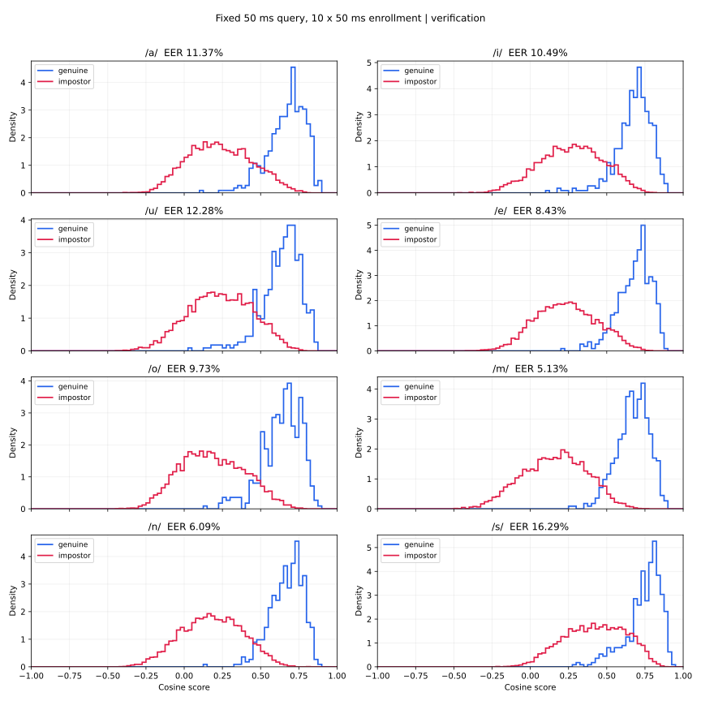
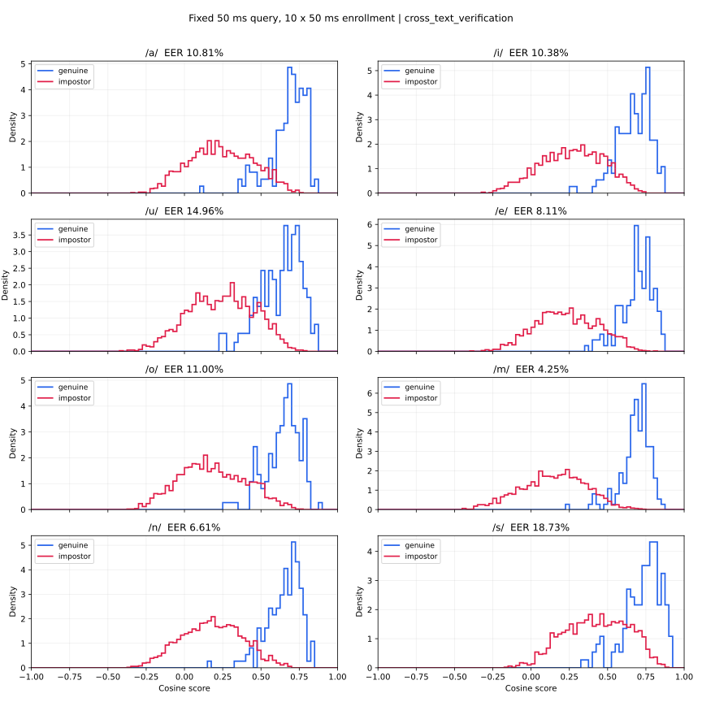

音素単独の識別力：a/i/u/e/o/m/n/s
同じモデル・話者・発話。全音素で登録10×50ms、照合1×50ms。
test：validation目標FAR 1%
| 発話 | 音素 | 件数 | FAR | FRR | EER | EERの95% CI |
|---|---|---|---|---|---|---|
| 通常文 | a | 448 | 1.690% | 41.295% | 11.368% | [7.339, 14.667]% |
| 通常文 | i | 448 | 1.690% | 37.277% | 10.491% | [7.551, 13.392]% |
| 通常文 | u | 448 | 1.929% | 43.080% | 12.277% | [8.891, 16.236]% |
| 通常文 | e | 448 | 0.893% | 41.071% | 8.434% | [5.895, 11.231]% |
| 通常文 | o | 448 | 2.248% | 33.259% | 9.726% | [6.909, 13.182]% |
| 通常文 | m | 448 | 0.733% | 25.670% | 5.134% | [3.279, 7.265]% |
| 通常文 | n | 448 | 0.909% | 27.902% | 6.091% | [3.964, 8.696]% |
| 通常文 | s | 448 | 2.376% | 49.330% | 16.295% | [10.549, 21.253]% |
| 別テキスト | a | 148 | 1.158% | 31.081% | 10.811% | [5.888, 15.558]% |
| 別テキスト | i | 148 | 1.351% | 39.189% | 10.376% | [6.738, 13.855]% |
| 別テキスト | u | 148 | 1.979% | 42.568% | 14.961% | [10.972, 19.310]% |
| 別テキスト | e | 148 | 0.627% | 35.135% | 8.108% | [4.150, 11.893]% |
| 別テキスト | o | 148 | 2.606% | 29.730% | 11.004% | [7.610, 13.837]% |
| 別テキスト | m | 148 | 0.917% | 15.541% | 4.247% | [2.013, 7.662]% |
| 別テキスト | n | 148 | 1.110% | 29.730% | 6.612% | [4.063, 10.052]% |
| 別テキスト | s | 148 | 2.992% | 53.378% | 18.726% | [11.768, 24.806]% |
主仮説：mとnはsより低EERか
| 主比較（左−右） | EER差（pp） | 97.5% CI（pp） | sより低EER |
|---|---|---|---|
| m_minus_s | -11.161 | [-16.341, -5.000] | 確認 |
| n_minus_s | -10.204 | [-15.708, -3.363] | 確認 |
本人/他人の分布と話者内の安定性
| 発話 | 音素 | 本人平均 | 本人SD | 他人平均 | 他人SD | 平均差 | d′ | 話者間/内分散 |
|---|---|---|---|---|---|---|---|---|
| 通常文 | a | 0.6708 | 0.1232 | 0.2363 | 0.2067 | 0.4345 | 2.554 | 0.706 |
| 通常文 | i | 0.6773 | 0.1173 | 0.2690 | 0.2063 | 0.4083 | 2.433 | 0.651 |
| 通常文 | u | 0.6355 | 0.1302 | 0.2367 | 0.2085 | 0.3989 | 2.294 | 0.595 |
| 通常文 | e | 0.6827 | 0.1089 | 0.2358 | 0.1981 | 0.4469 | 2.796 | 0.833 |
| 通常文 | o | 0.6394 | 0.1271 | 0.1871 | 0.2091 | 0.4523 | 2.614 | 0.659 |
| 通常文 | m | 0.6719 | 0.1049 | 0.1600 | 0.2079 | 0.5119 | 3.109 | 0.848 |
| 通常文 | n | 0.6692 | 0.1069 | 0.1817 | 0.1996 | 0.4875 | 3.045 | 0.773 |
| 通常文 | s | 0.7430 | 0.1170 | 0.4240 | 0.1991 | 0.3190 | 1.953 | 0.699 |
| 別テキスト | a | 0.6815 | 0.1204 | 0.2406 | 0.2068 | 0.4409 | 2.606 | 0.990 |
| 別テキスト | i | 0.6719 | 0.1114 | 0.2680 | 0.2045 | 0.4039 | 2.453 | 0.862 |
| 別テキスト | u | 0.6295 | 0.1358 | 0.2412 | 0.2145 | 0.3883 | 2.162 | 0.729 |
| 別テキスト | e | 0.6910 | 0.1040 | 0.2334 | 0.2022 | 0.4576 | 2.846 | 1.145 |
| 別テキスト | o | 0.6430 | 0.1159 | 0.1843 | 0.2164 | 0.4587 | 2.642 | 0.918 |
| 別テキスト | m | 0.6851 | 0.0964 | 0.1485 | 0.2096 | 0.5367 | 3.290 | 1.218 |
| 別テキスト | n | 0.6513 | 0.1112 | 0.1804 | 0.1991 | 0.4709 | 2.921 | 0.956 |
| 別テキスト | s | 0.7311 | 0.1228 | 0.4273 | 0.2057 | 0.3038 | 1.794 | 0.884 |
補助：validation目標FAR 0.1%
| 発話 | 音素 | 件数 | FAR | FRR | EER | EERの95% CI |
|---|---|---|---|---|---|---|
| 通常文 | a | 448 | 0.367% | 66.741% | 11.368% | [7.339, 14.667]% |
| 通常文 | i | 448 | 0.255% | 65.179% | 10.491% | [7.551, 13.392]% |
| 通常文 | u | 448 | 0.351% | 72.098% | 12.277% | [8.891, 16.236]% |
| 通常文 | e | 448 | 0.032% | 78.571% | 8.434% | [5.895, 11.231]% |
| 通常文 | o | 448 | 0.399% | 63.170% | 9.726% | [6.909, 13.182]% |
| 通常文 | m | 448 | 0.048% | 57.143% | 5.134% | [3.279, 7.265]% |
| 通常文 | n | 448 | 0.159% | 50.000% | 6.091% | [3.964, 8.696]% |
| 通常文 | s | 448 | 0.367% | 76.116% | 16.295% | [10.549, 21.253]% |
| 別テキスト | a | 148 | 0.097% | 59.459% | 10.811% | [5.888, 15.558]% |
| 別テキスト | i | 148 | 0.145% | 63.514% | 10.376% | [6.738, 13.855]% |
| 別テキスト | u | 148 | 0.290% | 69.595% | 14.961% | [10.972, 19.310]% |
| 別テキスト | e | 148 | 0.048% | 78.378% | 8.108% | [4.150, 11.893]% |
| 別テキスト | o | 148 | 0.386% | 64.189% | 11.004% | [7.610, 13.837]% |
| 別テキスト | m | 148 | 0.145% | 53.378% | 4.247% | [2.013, 7.662]% |
| 別テキスト | n | 148 | 0.048% | 54.730% | 6.612% | [4.063, 10.052]% |
| 別テキスト | s | 148 | 0.579% | 78.378% | 18.726% | [11.768, 24.806]% |
登録話者別EER：通常文
| 話者 | a | i | u | e | o | m | n | s |
|---|---|---|---|---|---|---|---|---|
| jvs003 | 3.23% | 2.64% | 9.68% | 3.23% | 8.39% | 2.40% | 6.45% | 6.45% |
| jvs005 | 8.35% | 12.41% | 6.90% | 8.35% | 15.27% | 9.31% | 10.34% | 16.47% |
| jvs006 | 12.90% | 9.59% | 11.99% | 7.67% | 6.45% | 6.45% | 9.68% | 5.04% |
| jvs010 | 6.45% | 9.68% | 8.15% | 9.59% | 6.24% | 9.35% | 5.76% | 24.46% |
| jvs015 | 12.90% | 6.45% | 4.08% | 3.23% | 4.56% | 3.60% | 2.64% | 17.75% |
| jvs017 | 4.07% | 16.67% | 11.24% | 5.02% | 10.00% | 6.67% | 3.33% | 13.33% |
| jvs024 | 5.00% | 20.00% | 23.81% | 18.81% | 6.43% | 3.57% | 3.57% | 15.95% |
| jvs029 | 6.01% | 8.41% | 11.54% | 8.65% | 7.69% | 0.72% | 1.44% | 7.69% |
| jvs030 | 9.29% | 14.05% | 19.29% | 7.14% | 10.71% | 7.14% | 10.00% | 10.95% |
| jvs032 | 9.00% | 3.85% | 8.77% | 8.53% | 7.82% | 6.87% | 7.69% | 11.54% |
| jvs048 | 3.45% | 6.44% | 6.90% | 10.34% | 6.68% | 2.39% | 2.63% | 3.10% |
| jvs064 | 9.59% | 6.47% | 9.68% | 1.44% | 2.88% | 3.23% | 3.23% | 11.75% |
| jvs065 | 16.63% | 8.43% | 8.67% | 6.51% | 9.09% | 3.03% | 6.02% | 15.15% |
| jvs076 | 11.75% | 10.55% | 18.47% | 12.90% | 12.90% | 6.45% | 11.27% | 8.63% |
| jvs081 | 7.41% | 11.11% | 14.49% | 8.55% | 21.85% | 3.70% | 5.70% | 14.81% |
登録話者別EER：別テキスト
| 話者 | a | i | u | e | o | m | n | s |
|---|---|---|---|---|---|---|---|---|
| jvs003 | 0.00% | 3.70% | 15.38% | 0.74% | 12.59% | 0.74% | 6.67% | 11.85% |
| jvs005 | 0.00% | 4.32% | 11.11% | 5.76% | 11.11% | 5.76% | 2.88% | 18.71% |
| jvs006 | 14.60% | 9.09% | 13.14% | 2.92% | 9.09% | 7.30% | 9.09% | 2.19% |
| jvs010 | 2.14% | 18.57% | 6.43% | 0.71% | 0.71% | 5.00% | 10.00% | 25.00% |
| jvs015 | 10.71% | 9.29% | 0.00% | 7.86% | 7.14% | 0.71% | 0.71% | 12.50% |
| jvs017 | 4.29% | 5.00% | 12.50% | 2.14% | 7.86% | 12.14% | 12.50% | 24.29% |
| jvs024 | 8.33% | 14.71% | 25.00% | 25.00% | 8.33% | 0.00% | 1.47% | 12.50% |
| jvs029 | 18.18% | 4.38% | 9.09% | 8.76% | 9.09% | 1.46% | 5.84% | 17.52% |
| jvs030 | 1.43% | 12.50% | 25.00% | 12.50% | 12.50% | 2.86% | 15.71% | 12.14% |
| jvs032 | 22.22% | 11.11% | 11.11% | 11.51% | 15.11% | 1.44% | 11.11% | 22.22% |
| jvs048 | 0.00% | 3.50% | 6.99% | 0.00% | 0.70% | 0.00% | 0.00% | 0.00% |
| jvs064 | 8.03% | 9.09% | 2.92% | 0.73% | 4.38% | 9.09% | 4.38% | 11.68% |
| jvs065 | 7.58% | 6.25% | 18.18% | 8.33% | 6.25% | 0.00% | 6.25% | 15.91% |
| jvs076 | 19.42% | 11.11% | 12.23% | 11.11% | 19.42% | 11.11% | 5.76% | 7.19% |
| jvs081 | 4.35% | 10.00% | 18.84% | 2.90% | 10.00% | 3.62% | 3.62% | 20.00% |
スコア分布：通常文
青：本人、赤：他人。横軸は全音素共通のcosineスコア。

スコア分布：別テキスト
青：本人、赤：他人。横軸は全音素共通のcosineスコア。

条件と解釈
既存の母音5種＋m/n/sモデル（JVS・Common Voice計140話者、30,000更新、1 seed）を固定し、追加学習なしで評価した。 全8音素で登録10区間×50ms、照合1区間×50ms。元音素境界内のcenter cropとRMS−50dBFSの判定を全音素に同じ方法で適用する。 元のcommon8発話から、全音素が50msで使える発話を推論前に選び、全音素で同じ話者・発話を使用した。
FAR/FRRは音素別にvalidation通常文で固定した閾値による値。EERはtestスコア分布の診断値であり、運用閾値の再校正ではない。 主検証は通常文のm−sとn−sのEER差。2比較のBonferroni調整として各97.5%区間を使用する。その他の比較・別テキスト・話者別順位は探索的診断。
d′は本人/他人の平均差を両群の分散で標準化した値。大きいほどスコア分布が分かれる。 話者間/内分散は50ms区間の正規化embeddingで計算し、話者を等重みにする。大きいほど異なる話者の中心が離れ、同じ話者内でまとまる。 登録話者別EERはその人の登録プロファイルに対する本人/他人試行の診断で、話者ごとに運用閾値を調整した結果ではない。
この結果はモデルが取り出せた識別情報の比較。音素本来の個人差を測るには別モデルや音響特徴での再検証が必要。 全音素が使える発話、50msの短い区間、観測済みJVS testの15話者、1 seedに限った結果で、未知録音条件や独立holdoutでの確証ではない。 前回の複数音素・登録3秒/照合1秒の実験とは入力と発話集合が異なるため、誤り率を直接引いて改善量とは扱わない。